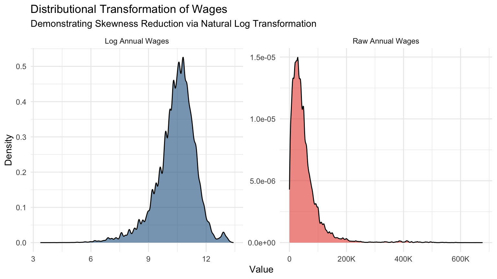
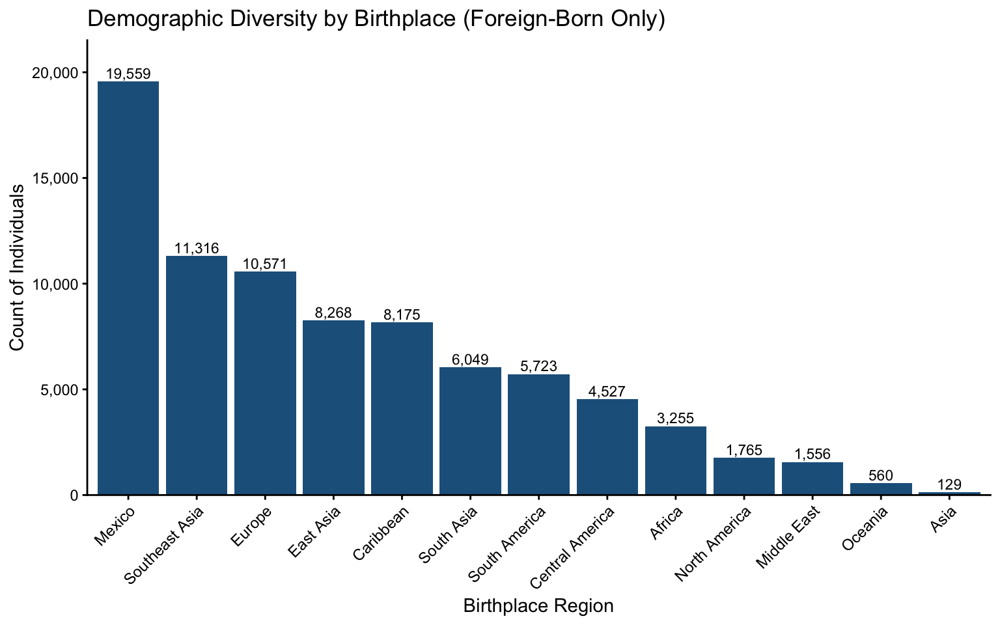
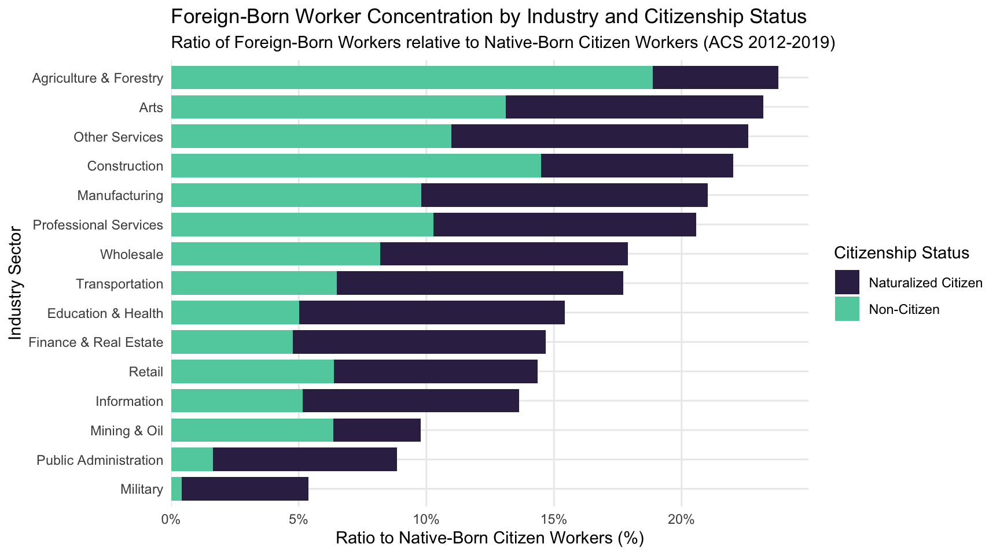
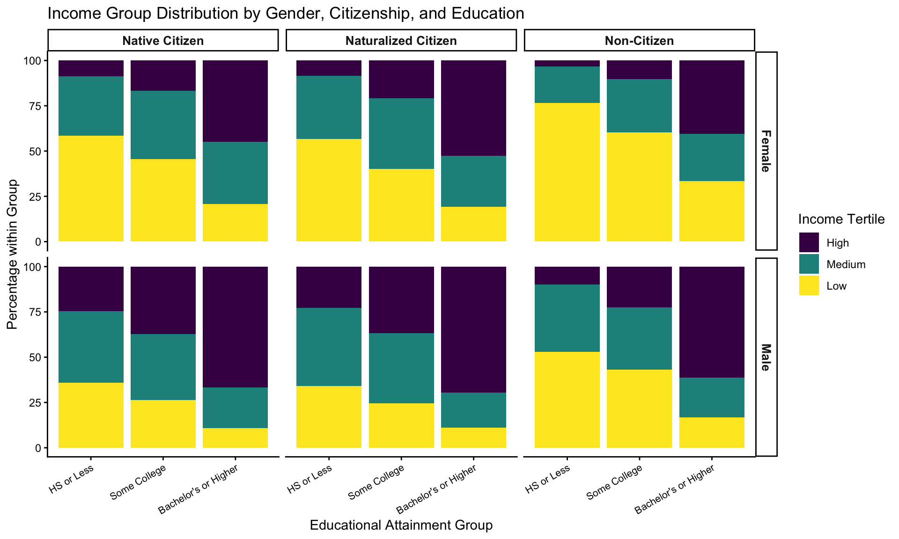
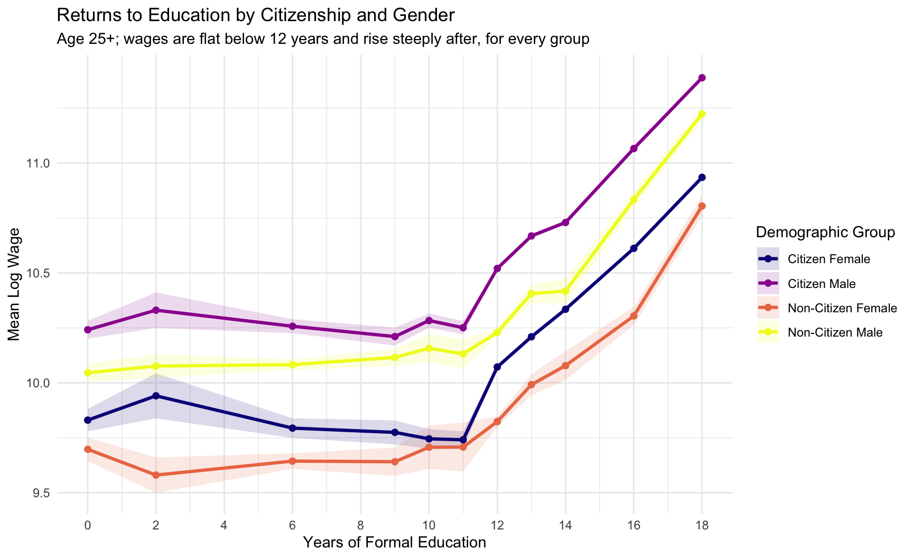

Code
library(here)
library(tidyverse)
library(haven)
library(scales)
library(viridis)
library(fixest)
library(broom)This document generates figures, returns to education, industry representation metrics, and model diagnostic plots for my research paper on gender, citizenship, and wage disparities in the U.S. labor market.
The data are a pooled cross-section of the 2012–2019 American Community Survey (ACS). Every model-based figure is generated from the paper’s preferred specification, estimated identically to 02_Regressions_and_Stats.do.
Household income is deliberately excluded. Race/ethnicity is included alongside the birthplace fixed effects: birthplace absorbs origin-country factors and immigrant selection, while race absorbs racial stratification within and across origin groups.
library(here)
library(tidyverse)
library(haven)
library(scales)
library(viridis)
library(fixest)
library(broom)here::i_am("Code/03_Graphs.qmd")
acs_data <- haven::read_dta("/Users/davidrios/Econometrics_Final_Paper/Data/clean/clean_data.dta")
# Filter wages & create log wage
acs_data <- acs_data %>%
filter(incwage_adj > 0) %>%
mutate(ln_wage = log(incwage_adj))
# Recode Demographic & Citizenship Labels
acs_data <- acs_data %>%
mutate(
citizen_cat_clean = as.numeric(citizen_cat),
citizen_label = case_when(
citizen_cat_clean == 0 ~ "Native Citizen",
citizen_cat_clean == 1 ~ "Naturalized Citizen",
citizen_cat_clean == 2 ~ "Non-Citizen",
TRUE ~ "Native Citizen"
),
sex_label = ifelse(sex == 1, "Male", "Female"),
citizen_sex_lbl = case_when(
citizen_cat_clean == 2 & sex == 2 ~ "Non-Citizen Female",
citizen_cat_clean != 2 & sex == 2 ~ "Citizen Female",
citizen_cat_clean == 2 & sex == 1 ~ "Non-Citizen Male",
citizen_cat_clean != 2 & sex == 1 ~ "Citizen Male"
)
)
# Education: grouped attainment
acs_data <- acs_data %>%
mutate(
educ_years = case_when(
educ == 0 ~ 0, # N/A or no schooling
educ == 1 ~ 2, # Nursery to Grade 4
educ == 2 ~ 6, # Grade 5-8
educ == 3 ~ 9, # Grade 9
educ == 4 ~ 10, # Grade 10
educ == 5 ~ 11, # Grade 11
educ == 6 ~ 12, # Grade 12 (HS Diploma)
educ == 7 ~ 13, # 1 yr college
educ == 8 ~ 14, # 2 yrs college
educ == 9 ~ 15, # 3 yrs college
educ == 10 ~ 16, # 4 yrs college (Bachelor's)
educ == 11 ~ 18, # 5+ yrs college (Graduate degree)
TRUE ~ NA_real_
),
educ_grouped = case_when(
educ <= 6 ~ "HS or Less",
educ %in% c(7, 8, 9) ~ "Some College",
educ %in% c(10, 11) ~ "Bachelor's or Higher"
),
educ_grouped = factor(educ_grouped,
levels = c("HS or Less", "Some College", "Bachelor's or Higher"))
)
# English Fluency & Children Groups
acs_data <- acs_data %>%
mutate(
eng_fluency = case_when(
speakeng %in% c(3, 4) ~ "Fluent",
speakeng %in% c(2, 5) ~ "Intermediate",
speakeng %in% c(1, 6) ~ "Limited"
),
eng_fluency = factor(eng_fluency, levels = c("Fluent", "Intermediate", "Limited")),
nchild_grouped = case_when(
nchild == 0 ~ "None",
nchild == 1 ~ "One",
nchild == 2 ~ "Two",
nchild %in% c(3, 4) ~ "Three-Four",
nchild >= 5 ~ "Five+"
),
nchild_grouped = factor(nchild_grouped,
levels = c("None", "One", "Two", "Three-Four", "Five+"))
)
# Income Groups
acs_data <- acs_data %>%
mutate(
income_tertile = ntile(incwage_adj, 3),
income_group = case_when(
income_tertile == 1 ~ "Low",
income_tertile == 2 ~ "Medium",
income_tertile == 3 ~ "High"
),
income_group = factor(income_group, levels = c("High", "Medium", "Low"))
)
# Industry & Birthplace
acs_data <- acs_data %>%
mutate(
industry_name = as.character(haven::as_factor(industry_encoded)),
birthplace_label = haven::as_factor(birthplace)
)
# Compute Industry Ratio Metrics
ratio_data_detailed <- acs_data %>%
filter(!is.na(industry_name)) %>%
group_by(industry_name, citizen_label) %>%
summarise(count = n(), .groups = "drop") %>%
pivot_wider(
names_from = citizen_label,
values_from = count,
values_fill = 0
) %>%
mutate(
ratio_nat = `Naturalized Citizen` / `Native Citizen`,
ratio_non = `Non-Citizen` / `Native Citizen`
) %>%
arrange(desc(ratio_nat + ratio_non))
ratio_long <- ratio_data_detailed %>%
select(industry_name, ratio_nat, ratio_non) %>%
pivot_longer(
cols = starts_with("ratio"),
names_to = "Group",
values_to = "Ratio"
) %>%
mutate(
Group = recode(
Group,
ratio_nat = "Naturalized Citizen",
ratio_non = "Non-Citizen"
)
)
# Center Age at the (unweighted) sample mean
mean_age <- mean(acs_data$age, na.rm = TRUE)
acs_data <- acs_data %>%
mutate(
age_c = age - mean_age,
age_c_sq = age_c^2,
# Labor supply and the covariates added in the hours revision
ln_hours = log(annual_hours),
marital_lbl = haven::as_factor(marital_status),
nchlt5_lbl = haven::as_factor(nchlt5_grouped),
ftfy_lbl = factor(ftfy, levels = c(0, 1), labels = c("Not FTFY", "FTFY"))
)
# Preferred Specification: must stay identical to M6 in 02_Regressions_and_Stats.do
full_fe_model <- feols(
ln_wage ~ factor(citizen_cat_clean) * factor(sex) +
age_c + age_c_sq +
educ_grouped +
eng_fluency +
nchild_grouped +
marital_lbl * factor(sex) +
nchlt5_lbl +
factor(rachsing) +
ln_hours |
year + industry_encoded + puma_state + birthplace,
cluster = ~puma_state,
data = acs_data
)
etable(full_fe_model, digits = 4) full_fe_model
Dependent Var.: ln_wage
factor(citizen_cat_clean)1 -0.0017 (0.0134)
factor(citizen_cat_clean)2 -0.0587*** (0.0136)
factor(sex)2 -0.2596*** (0.0056)
age_c 0.0104*** (0.0002)
age_c_sq -0.0005*** (1.17e-5)
educ_groupedSome College 0.1354*** (0.0032)
educ_groupedBachelor's or Higher 0.4674*** (0.0060)
eng_fluencyIntermediate -0.1659*** (0.0084)
eng_fluencyLimited -0.2846*** (0.0151)
nchild_groupedOne 0.0036 (0.0027)
nchild_groupedTwo 0.0342*** (0.0044)
nchild_groupedThree-Four 0.0145* (0.0061)
nchild_groupedFive+ -0.0355** (0.0133)
marital_lblPreviously Married -0.1266*** (0.0053)
marital_lblNever Married -0.2172*** (0.0059)
nchlt5_lblOne 0.0457*** (0.0040)
nchlt5_lblTwo or More 0.0766*** (0.0069)
factor(rachsing)2 -0.1213*** (0.0072)
factor(rachsing)3 -0.0625** (0.0186)
factor(rachsing)4 -0.0030 (0.0096)
factor(rachsing)5 -0.0688*** (0.0060)
ln_hours 0.9782*** (0.0046)
factor(citizen_cat_clean)1 x factor(sex)2 0.0404*** (0.0109)
factor(citizen_cat_clean)2 x factor(sex)2 0.0156. (0.0083)
factor(sex)2 x marital_lblPreviously Married 0.0870*** (0.0062)
factor(sex)2 x marital_lblNever Married 0.1753*** (0.0062)
Fixed-Effects: --------------------
year Yes
industry_encoded Yes
puma_state Yes
birthplace Yes
________________________________________ ____________________
S.E.: Clustered by: puma_state
Observations 512,807
R2 0.69819
Within R2 0.63473
---
Signif. codes: 0 '***' 0.001 '**' 0.01 '*' 0.05 '.' 0.1 ' ' 1fig1 <- acs_data %>%
select(incwage_adj, ln_wage) %>%
pivot_longer(cols = everything(), names_to = "metric", values_to = "value") %>%
mutate(metric = ifelse(metric == "incwage_adj", "Raw Annual Wages", "Log Annual Wages")) %>%
ggplot(aes(x = value, fill = metric)) +
geom_density(alpha = 0.6, show.legend = FALSE) +
facet_wrap(~metric, scales = "free") +
scale_fill_manual(values = c("Log Annual Wages" = "#21618c", "Raw Annual Wages" = "#e74c3c")) +
scale_x_continuous(labels = label_number(scale_cut = cut_short_scale())) +
labs(
title = "Distributional Transformation of Wages",
subtitle = "Demonstrating Skewness Reduction via Natural Log Transformation",
x = "Value",
y = "Density"
) +
theme_minimal(base_size = 11)
fig1
birthplace_counts <- acs_data %>%
filter(!birthplace_label %in% c("U.S. & Territories", "Other/Unknown", "N/A")) %>%
count(birthplace_label) %>%
arrange(desc(n))
fig2 <- ggplot(birthplace_counts, aes(x = reorder(birthplace_label, -n), y = n)) +
geom_bar(stat = "identity", fill = "#21618c") +
geom_text(aes(label = comma(n)), vjust = -0.3, size = 3) +
labs(
title = "Demographic Diversity by Birthplace (Foreign-Born Only)",
x = "Birthplace Region",
y = "Count of Individuals") +
scale_y_continuous(labels = label_comma(), expand = expansion(mult = c(0, 0.1))) +
theme_classic() +
theme(axis.text.x = element_text(angle = 45, hjust = 1, size = 9))
fig2
fig3 <- ggplot(ratio_long, aes(x = reorder(industry_name, Ratio), y = Ratio, fill = Group)) +
geom_col(position = "stack", width = 0.8) +
coord_flip() +
scale_y_continuous(labels = scales::percent_format(accuracy = 1), expand = expansion(mult = c(0, 0.05))) +
scale_fill_viridis_d(option = "G", begin = 0.2, end = 0.8) +
labs(
title = "Foreign-Born Worker Concentration by Industry and Citizenship Status",
subtitle = "Ratio of Foreign-Born Workers relative to Native-Born Citizen Workers (ACS 2012-2019)",
x = "Industry Sector",
y = "Ratio to Native-Born Citizen Workers (%)",
fill = "Citizenship Status"
) +
theme_minimal(base_size = 11) +
theme(
legend.position = "right",
panel.grid.minor = element_blank()
)
fig3
educ_income_intersectional <- acs_data %>%
filter(!is.na(educ_grouped)) %>%
group_by(educ_grouped, income_group, citizen_label, sex_label) %>%
summarise(count = n(), .groups = "drop") %>%
group_by(educ_grouped, citizen_label, sex_label) %>%
mutate(percent = count / sum(count) * 100)
fig4 <- ggplot(educ_income_intersectional, aes(x = educ_grouped, y = percent, fill = income_group)) +
geom_bar(stat = "identity", position = "stack") +
scale_fill_viridis_d(name = "Income Tertile", option = "D") +
labs(
title = "Income Group Distribution by Gender, Citizenship, and Education",
x = "Educational Attainment Group",
y = "Percentage within Group"
) +
theme_classic() +
theme(
axis.text.x = element_text(angle = 30, hjust = 1, size = 8),
strip.text = element_text(size = 10, face = "bold")
) +
facet_grid(sex_label ~ citizen_label)
fig4
educ_sample <- acs_data %>%
filter(!is.na(educ_years), !is.na(citizen_sex_lbl), age >= 25)
educ_returns <- educ_sample %>%
group_by(citizen_sex_lbl, educ_years) %>%
summarise(
mean_ln_wage = mean(ln_wage),
se = sd(ln_wage) / sqrt(n()),
n = n(),
.groups = "drop"
) %>%
filter(n >= 30)
educ_slopes <- educ_sample %>%
mutate(above_hs = educ_years >= 12) %>%
group_by(citizen_sex_lbl, above_hs) %>%
summarise(
slope = coef(lm(ln_wage ~ educ_years))[2],
n = n(),
.groups = "drop"
)
print(educ_slopes)# A tibble: 8 × 4
citizen_sex_lbl above_hs slope n
<chr> <lgl> <dbl> <int>
1 Citizen Female FALSE -0.00992 6454
2 Citizen Female TRUE 0.141 202600
3 Citizen Male FALSE 0.000215 9865
4 Citizen Male TRUE 0.142 208106
5 Non-Citizen Female FALSE 0.000219 3053
6 Non-Citizen Female TRUE 0.152 9404
7 Non-Citizen Male FALSE 0.00804 5656
8 Non-Citizen Male TRUE 0.162 12934fig5 <- ggplot(educ_returns, aes(x = educ_years, y = mean_ln_wage,
color = citizen_sex_lbl, fill = citizen_sex_lbl)) +
geom_ribbon(aes(ymin = mean_ln_wage - 1.96 * se, ymax = mean_ln_wage + 1.96 * se),
alpha = 0.15, color = NA) +
geom_line(linewidth = 1.1) +
geom_point(size = 1.8) +
scale_color_viridis_d(option = "plasma", name = "Demographic Group") +
scale_fill_viridis_d(option = "plasma", name = "Demographic Group") +
scale_x_continuous(breaks = seq(0, 18, by = 2)) +
labs(
title = "Returns to Education by Citizenship and Gender",
subtitle = "Age 25+; wages are flat below 12 years and rise steeply after, for every group",
x = "Years of Formal Education",
y = "Mean Log Wage"
) +
theme_minimal(base_size = 11)
fig5
dir.create(here("Output", "figures"), recursive = TRUE, showWarnings = FALSE)
save_fig <- function(filename, plot_obj, w, h) {
ggsave(
filename = here("Output", "figures", filename),
plot = plot_obj,
width = w, height = h,
dpi = 300, bg = "white"
)
}
save_fig("Figure_1_Log_Wages.png", fig1, 8, 4.5)
save_fig("Figure_2_Birthplace.png", fig2, 8, 5)
save_fig("Figure_3_Industry.png", fig3, 9, 5)
save_fig("Figure_4_Income.png", fig4, 10, 6)
save_fig("Figure_5_Returns_to_Educ.png", fig5, 9, 5.5)
save_pdf <- function(filename, plot_obj, w, h) {
ggsave(
filename = here("Paper", filename),
plot = plot_obj,
width = w, height = h, bg = "white"
)
}
save_pdf("fig1_log_wages.pdf", fig1, 8, 4.5)
save_pdf("fig2_birthplace.pdf", fig2, 8, 5)
save_pdf("fig3_industry_ratio.pdf", fig3, 9, 5)
save_pdf("fig4_income_dist.pdf", fig4, 10, 6)
save_pdf("fig5_returns_educ.pdf", fig5, 9, 5.5)